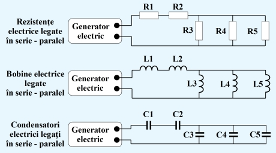

În cadrul secţiunii de electronică pentru începători vei găsi informaţii despre curentul
electric,
componente electrice şi electronice, circuite electrice şi electronice şi despre cam tot ceea ce
ţine de bazele electronicii. Lista articolelor din categoria electronică pentru începători este
prezentată mai jos:
Circuitele electrice sunt esențiale în domeniul robotică pentru că oferă calea prin care curentul
electric poate circula, permițând funcționarea componentelor și sistemelor robotice. Acestea sunt
formate dintr-o varietate de componente, precum baterii pentru a furniza sursa de energie,
conductoare
pentru a permite fluxul de curent și dispozitive de control pentru a gestiona acest flux.
Înțelegerea
modului în care aceste componente sunt conectate și interacționează într-un circuit este crucială
pentru
a construi și a înțelege funcționarea roboților. Fără un circuit electric corect proiectat și
implementat, un robot nu ar putea să funcționeze corespunzător.
Capacitatea electrică
Capacitatea electrică este o măsură a capacității unui sistem sau a unui element de a stoca sarcină
electrică. Este determinată de raportul dintre sarcina electrică (adică cantitatea de sarcină
electrică)
și tensiunea electrică (diferența de potențial electric) dintre cele două plăci ale unui
condensator.
Unitatea de măsură a capacității este faradul (F). Capacitățile sunt utilizate într-o varietate de
aplicații, inclusiv în filtrarea semnalului, în circuitul de pornire al motoarelor electrice și în
stocarea de energie în sistemele de alimentare.
Inductanță electrică
Inductanța electrică este o măsură a capacității unui conductor spiralat sau a unei bobine de a induce
o
tensiune într-un circuit electric atunci când curentul trece prin ea sau se schimbă. Este determinată
de
geometria și caracteristicile materialelor inductorului. Inductanța este măsurată în henry (H).
Inductanțele sunt utilizate într-o varietate de aplicații, cum ar fi în circuitele de filtrare a
semnalului, în convertoarele de energie și în sistemele de comunicare fără fir.
Rezistența electrică
Rezistența electrică este măsura opoziției pe care un material o oferă fluxului de curent electric.
Este
determinată de proprietățile materialelor și de geometria conductorului. Unitatea de măsură a
rezistenței este ohmul (Ω). Rezistențele sunt utilizate într-o varietate de aplicații, inclusiv în
limitarea curentului în circuite, în divizorii de tensiune și în calculatoare pentru măsurarea
tensiunii
și a curentului. De asemenea, ele sunt utilizate în reglarea luminii și a vitezei motoarelor
electrice.
Legarea in serie
Legarea componentelor în serie este o modalitate de conectare a acestora într-un circuit electric în
care componentele sunt conectate una după alta, astfel încât același curent trece prin fiecare
componentă. Într-un circuit în serie, tensiunea se distribuie între componentele conectate în serie,
iar
rezistența totală a circuitului este suma rezistențelor fiecărei componente. Această configurație
este
utilizată atunci când dorim să adăugăm rezistențe sau alte componente pentru a obține o rezistență
totală mai mare sau când dorim să împărțim tensiunea în mod egal între mai multe componente.
Legarea in paralel
Legarea componentelor în paralel este o modalitate de conectare a acestora într-un circuit electric
în
care componentele sunt conectate astfel încât aceeași tensiune este aplicată la capetele fiecăreia,
dar
curentul se împarte între ele. Într-un circuit în paralel, rezistența totală a circuitului este mai
mică
decât cea mai mică rezistență a unei componente individuale, iar suma curentului care intră în nodul
de
joncțiune este egală cu suma curentului care iese din acesta. Această configurație este folosită
atunci
când dorim să obținem o rezistență totală mai mică sau când dorim să alimentăm mai multe componente
cu
aceeași tensiune, dar cu curent diferit.

×
Legarea componentelor în serie și în paralel sunt două metode fundamentale de conectare a
componentelor
în circuitele electrice și sunt utilizate într-o varietate de aplicații în robotică și alte domenii.
Înțelegerea diferențelor și a avantajelor fiecărei configurații este importantă pentru proiectarea
și
implementarea circuitelor electrice în sistemele robotice.
Componentele electronice precum rezistoarele, condensatoarele, bobinele, diodele și tranzistoarele
sunt
esențiale în construirea circuitelor electrice și electronice. Aceste componente îndeplinesc diverse
funcții, cum ar fi limitarea curentului, stocarea energiei, rectificarea semnalului și amplificarea
semnalului, fiind vitale pentru funcționarea roboților. Înțelegerea funcționării și utilizării
acestor
componente este esențială în proiectarea și construirea roboților, asigurându-se că aceștia își pot
îndeplini sarcinile cu eficiență și fiabilitate.
Quiz
1. În ce se măsoară capacitatea electrică?
2. În ce se măsoară rezistența electrică?
3. În ce se măsoară inductanța electrică?
4. Care tip de legatura este ce-a mai importantă?
5. Care din urmatoarele componente sunt importante in robotica?